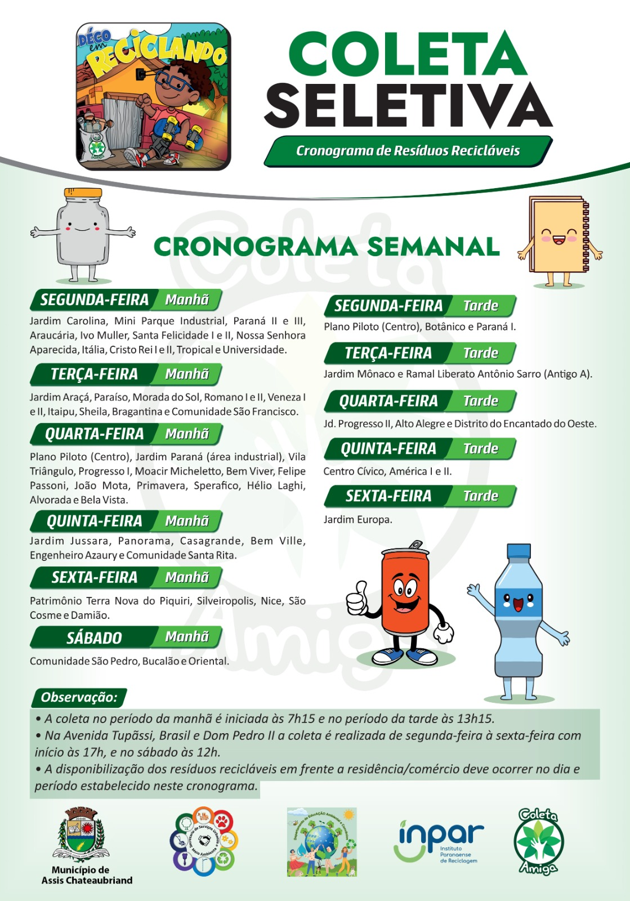

Cronograma da Coleta de Resíduos
Aqui você encontra os dias e horários da coleta seletiva e orgânica em seu bairro.

Aqui você encontra os dias e horários da coleta seletiva e orgânica em seu bairro.